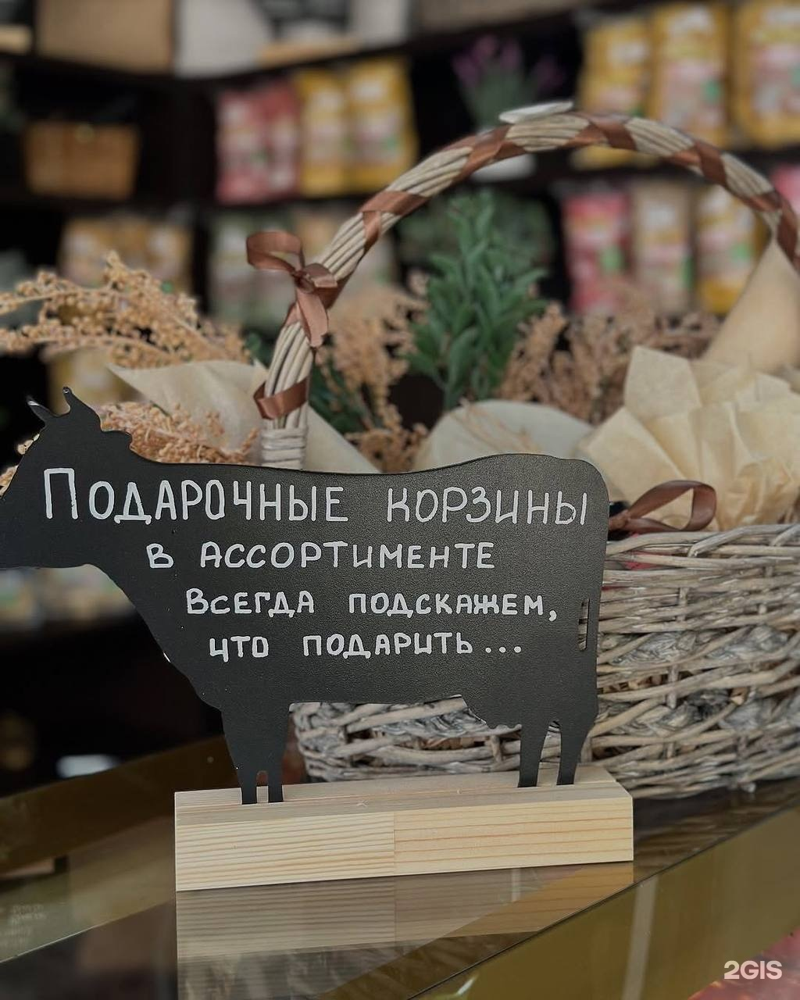

«Сырный»
Несколько сортов с нарезкой и соусом.
Сырная тарелка к вину, набор к празднику или просто красиво упакованный гостинец. Соберём, нарежем, подпишем сорта — и упакуем так, что не стыдно подарить.

Мы соберём сырную тарелку под ваш повод: на двоих, на компанию, к вину или к ужину. Подберём сорта, чтобы было интересно пробовать: что-то сливочное, что-то с плесенью, что-то выдержанное.
Кому подойдёт: на день рождения и юбилей; к вину или ужину с друзьями; коллегам вместо стандартного подарка; на корпоратив.
Собрать тарелкуСобираем наборы из нашей продукции: сыры, масло, колбаса, соус, десерты. Можно добавить открытку. Получается подарок, который рассказывает о нашем производстве лучше любой рекламы.
Упаковка: подберём под повод. Если нужно — добавим ленту и открытку.
Заказать наборНесколько сортов с нарезкой и соусом.
Сыр, масло, творог, йогурт.
Сыр, колбаса, лапша, соус.
Сырки, моти, печенье, десерты.

В магазине можно попробовать сыры и соусы. Это не «маркетинговый аттракцион», а нормальный способ выбрать: вкус у каждого свой, и объяснять его словами бессмысленно.
Кому будет интересно: тем, кто впервые пробует сыры с плесенью; тем, кто хочет собрать тарелку и не знает, с чего начать; тем, кто ищет подарок и хочет быть уверенным во вкусе.
Записаться на дегустациюВ магазине есть столовая и кафе-зона: можно поесть домашнюю еду, выпить кофе с десертом или сырком. Порции щедрые, еда как дома — это отмечают в отзывах.
Меню и состав блюд уточняйте у продавцов в магазине.
Набор с нарезкой и открыткой.
Большие наборы и корпоративные заказы.
Сырная тарелка к вину.
Всё, чтобы накрыть стол без готовки.
Небольшой набор с сыром и соусом.

Лучше за 1–2 дня. В праздники — заранее, чтобы всё было в наличии.
Да. Скажите, что любите, и мы соберём под вас.
Да, обсуждаем количество, упаковку и сроки.
Да, при заказе скажите текст — подпишем.
Да, по Ставрополю. Можно отправить набор напрямую получателю.